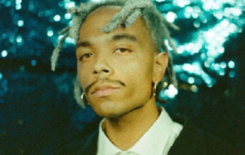

Pixel Bath - 5/10
by Jean Dawson
Pixel Bath and Jean Dawson came as a surprise to me just this week. I was looking through some new music and found the song "Triple Double" featuring ASAP Rocky which piqued my interest. I have yet to dive into all of Dawson's music but it sounds like a typical indie album with low-fi beats as backing to most of his songs. The more and more I listen to the 13 songs on the artist's second full album. I would give Dawson a listen and keep a lookout for his name on some up and coming music.

Likes:
This album was a very pleasant surprise after I was preparing to write about "Triple Double" because of the great ASAP Rocky feature. I decided to listen to the rest of the album and it maintained its overall indie feel. "Pyrotechnics" is one of my favorite songs. I really enjoy how he layered his own vocals over a different vocal track. It is the perfect song to play in the background while you do homework or talk to someone on the phone.
Dislikes:
While I did enjoy the album I can easily find myself getting bored of most of his songs because of their un-originality of backing music. Additionally, one of the songs "06 Burst" hosts scream singing which I find to be untalented and unenjoyable. I think that because Dawson is such a new artist, he needs time to mature and work through some of his different sounds in his music. For someone who released his song in 2018 I have high hopes for Dawson, but hope he digs deeper into Indie tracks than scream rap. Additionally, 13 songs and 38 minutes is a very brief album and in my opinion it is worth it to wait longer for more quality music at once than multiple small projects.
Beautiful Havoc - 7/10
by $not
$not(pronounced snot) is an up and coming rapper. I uncovered his aggressive rap through Tik Tok where his song "Moon and Stars" from his 2020 album "Tragedy" went viral. With high expectations following his previous album release, Beautiful Havoc didn't overwhelm or underwhelm me. One of the most notable things about $not, is that even though his popularity is increasing, his social media feels intimate. He treats his fans like close friends sharing when he is up late or lonely. It humanizes a mildly popular rapper and I hope other fans appreciate it as much as I do. A fun fact to note is that he rarely ever appears out without a hoodie over his head pulled tight around his face which can be seen in the image below.

Likes:
There are multiple songs on this album that I added to my playlist after the first album and continue to listen to multiple times a week. "Revenge" took a little while to grow on me but is now a song that I look forward to when it circles around my music que. "Who Do I Trust" similarly has taken some time to appreciate but overall I don't skip the song when it comes on. The upbeat backing beats with heavy 808's pull most of $not's songs together with his deep monotone rapping to create a concrete album. There is one song from this album that I consider to be pure art: "Sangria" featuring Denzel Curry. I love the beat and the vocals with the addition of Denzel Curry's feature makes it my favorite song in the Album. The features and beats show great improvement from $not's last album and I can 100% confirm that I am a fan.
Dislikes:
For $not, a relatively new artist, to put 24 songs out in two albums in one year is impressive, but I would have preferred him to release one full length album with 20 of his best songs. By releasing so much new music, I feel like some songs feel rushed and could have been true hits. Certain songs like "4" didn't seem to fit in the album and I think the album could have been better if $not had worked on the song more. "Havoc" slowed the pace of the album down for no reason when $not could have really pulled the album to a close after "Mean" featuring FloMilli. $not does have a generally monotone rapping style which can be repetitive, but his varying beats help to make each song feel new. While I do appreciate the music he did release, I wish $not could have waited to release this album and worked on some of the songs more.
Can We - 6/10
by Jim-E-Stack ft. Kacy Hill
Both Jim-E-Stack and Kacy Hill have impressive resumes in the music industry. Jim-E-Stack is a respected producer and Kacy Hill was featured on Travis Scott's "90210" arguably one of the best rap songs from the last decade. Released as one song in Stack's album, "Can We" came across my Tik Tok when an account, MostlyMusic, posted the top 10 indie-pop songs of the week. I highly recommend that you check out his Spotify which is liked by clicking his username. The song was more of an exploration of the potential that Hill has as a vocal artist.


Likes:
For a solo I found the song to be lighthearted and enjoyable. Hill's vocals are simple and her humming is delightful on the ears. Stacks's superb producing yields a song with a solid beat and a perfectly placed breakdown with just the right mix of drums bass and symbols. I truly enjoyed the production of this song and the vocals fit nicely.
Dislikes:
Personally, I find the song to be too light for my own listening. The upbeat drop from Stack's production doesn't mix with my preferred taste in music. Because my rankings are based on my personal preference I couldn't give this a perfect rating although I'm sure there are people who will enjoy this song to it's full potential.
Flower Boy - 7/10
By Tyler The Creator
This album is by far one of my favorite albums of all time. To start, it has features like Rex Orange County, Frank Ocean, and Steve Lacy. The songs are unlike any other and each tells a story different from the one before it. This was the first album that introduced my appreciation for Tyler and changed by music taste from rap like Travis Scott's "Astroworld" to more relaxed rap like Frank Ocean. I find Tyler's personality to shine right through in his music which is both amusing and creative. A fun fact is that Tyler doesn't like how deep his voice is, so in almost all of his songs, he pitches his voice up using a keyboard.
Likes:
I initially didn't listen to all of the songs in this album as a whole. Instead I had heard songs like "Boredom" and "See You Again" which still remain two of my favorite songs on the album. One thing that is blatantly obvious when you look at the track list is the variety and quantity of features. Features include Rex Orange County, Kali Uchis, Frank Ocean, A$AP Rocky, Steve Lacy, Lil Wayne, Anna of the North, Jaden Smith, and Estelle give a very wide variety of vocal ranges to each song. Certain songs are good to get hyped up to like "Who Dat Boy" which still manages to make me jump in my seat when I watch videos of it being preformed at concerts. Overall, the majority of the songs in this album are in my playlist and will be for a very long time, not to mention the other great Tyler the Creator albums, "Igor", "Wolf", "Goblin", and "Cherry Bomb". This album shaped my Sophomore year and my life for the indefinite future.
Dislikes:
While I do love most of the album, there are a few songs that I dislike. To begin, "Sometimes" is just a weird sample that fits with Tyler's personality but disrupts the flow of the album. I like "Who Dat Boy" but I feel like it doesn't really mesh with the other songs of the album. The music I listen to usually fits with my mood and I don't like to go from "See You Again" a relaxing song to the aggressive yelling in "Who Dat Boy". Similarly, "I Ain't Got Time!" just is so abstract and simply is too weird for me. There is no way to describe it so I would recommend that you give it a listen yourself because it is unlike any other song on the album and doesn't fit at all in my opinion. In the scope of the rest of Tyler's music this album is simply not his best, but it does house some of my favorite songs.
Mile High - 10/10
by James Blake ft. Travis Scott and Metro Boomin
This song not has consistently remained on my playlist for many years now. It features a melodic beat with angelic lyrics from James Blake and vocals by Travis Scott that perfectly compliment the depths of the backing track. Metro Boomin did a great job producing the song where the ebbs and flows of the beat perfectly interact with the vocals.
Likes:
I cannot say enough as to how much I love this song. Throughout the multiple changes of my music interests, “Mile High” has consistently remained as one of my favorite songs. I can’t say exactly why it doesn’t have the popularity of other Travis Scott features, but I appreciate that there is one song that Scott’s millions of fans haven’t blown up for the whole world to listen to.
Dislikes:
The only thing that I dislike about this song is that it is one of a kind and I don’t think a song like it will ever be created. James Blake doesn’t top this song in his album and I feel like the way he and Scott harmonize will not interlock with the Metro Boomin beat to create such a beautiful symphony. This is my first item for my week of 10/10 rated songs and I chose this to kick the week off because I could listen to this song over and over again and never get tired of it.
This Old Dog - 10/10
by Mac Demarco
During the beginning of my exploration of the Indie Genre I listened to all of Steve Lacy's released music and then went on to explore the only other Indie artist I had heard of: Mac Demarco. I started with his top 5 songs and then listened to his albums in chronological order. "This Old Dog" was initially too slow for me, but with time it became my favorite Demarco album. There isn't a single song that I would skip. The flow of the songs maintains melodic and relaxing and I find it to be Mac's most personal album.
Likes:
There are too many good things to say about this album. I can't pick a favorite song because each and every one is phenomenal. For a frame of reference "Go Easy" and "Chamber of Reflections" were at the time my favorite Mac songs, but then my entire ranking system was flipped upside-down. "Still Beating" was the first Indie song I learned on guitar and "This Old Dog" made me the fan that I am today. In the video above, Mac walks through a park in France and I cannot imagine a more perfect, serene video. "Moonlight on the River" put me in a trance with it's melodic beats and guitar accents. Lastly, "A Wolf Who Wears Sheeps Clothes" consistently can turn a bad day into a good one. Out of all Demarco's albums, this one has no skips.
Dislikes:
I really cannot say a single dislike I have about "This Old Dog". In sincerity, there is no other Indie album that can compete with this album which is why I gave this a 10/10. If you had to listen to only one of my recommendations, it would be "This Old Dog". Give it a listen.